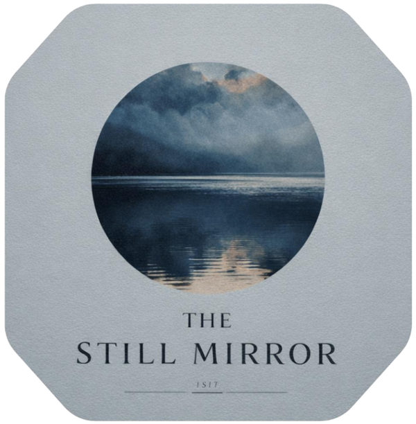
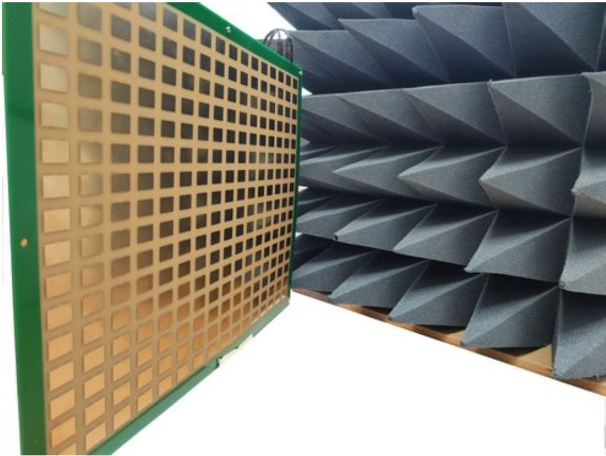

A competition at the intersection of information theory and machine learning, held in conjunction with the IEEE International Symposium on Information Theory, with final presentations & prize ceremony at IEEE ISIT 2026 in Guangzhou, China.
"Men do not mirror themselves in running water, but in still water."
「人莫鑒於流水，而鑒於止水。」
Zhuangzi 莊子 · Ch. 5 · Warring States · 4th c. BCE
The Student and Outreach Committee of the IEEE Information Theory Society is delighted to announce the 4th edition of the Data-to-Information (D2I) competition, jointly organized with the IEEE Information Theory Society Guangzhou Chapter, held in conjunction with the IEEE International Symposium on Information Theory in Guangzhou.
In this edition, we explore the theme of reflection. Following Zhuangzi's advice, we ask whether modern wireless systems might benefit from making the channel sufficiently calm before attempting transmission. This competition sits at the intersection of information theory and machine learning, challenging participants to extract as much mutual information as possible from a realistic Reflective Intelligent Surface (RIS) dataset and to design robust algorithms that work in practice.
A RIS is a synthetically produced meta-surface that can programmatically manipulate the phase of a radio wave reflected from it. Traditional wireless channels treat the environment as a fixed and uncontrolled medium; RISs transform this paradigm by embedding hundreds of programmable reflecting elements into the environment itself. By configuring these elements, the transmitter can steer energy toward the receiver and counteract fading.

When the transmitter and receiver are synchronized, the received signal carries rich channel state information (CSI) that encodes both the direct path and the reflected contributions. Understanding and exploiting this high-dimensional CSI — a 256-element binary configuration space in our dataset — is the core challenge of the competition.
Who this is for: researchers and practitioners working in information theory, machine learning, signal processing, and wireless networking. Students and early-career researchers are especially encouraged to join. No prior RIS experience required — strong baselines and a starter notebook are provided.
The competition consists of one warm-up plus three scored tasks of increasing difficulty. While each task builds partially on the previous ones, participants are free to tackle any task independently. Final rankings are based on cumulative performance across all tasks.
A detailed specification document — with evaluation scripts, point weightings, and submission procedures — will be released on the Kaggle page at the start of the competition.
Learn a mapping between channel realizations: given CSI under one configuration, predict CSI under a related one — a different RIS phase setting, frequency shift, antenna subset, or spatial displacement. This task grounds participants in the structure of the dataset and the relationships between channel observations.
Metric: Frobenius norm vs. ground truthGiven a set of RIS configurations and their CSI, estimate the mutual information between transmitted and received signals under Gaussian signaling of fixed power. The core challenge is designing estimators that generalize across different transmitter positions and RIS states. Reference MI values are computed via high-fidelity Monte-Carlo simulation and well-established neural MI estimators.
Score: ½ · RMSE + ½ · (1 − Spearman ρ)For each test transmitter position, output a binary phase-shift vector for the 256 RIS elements and a transmit beamforming vector satisfying a power constraint — jointly optimized to maximize the achievable rate. Solutions can combine differentiable neural MI objectives with analytical baselines (MRT, coordinate-wise alignment, dominant eigenvectors).
Metric: Average MI across positions · higher is betterAlice and Bob exchange pilot signals to estimate a reciprocal wireless channel assisted by a RIS. Channel estimates are quantized, decoded via LDPC, and hashed into a shared secret key. An eavesdropper, Eve, observes her own channel to Bob and attempts to infer the key. Given Eve's observations and a training set of Alice–Bob bit sequences, participants must predict Alice's bits for unseen RIS configurations — quantifying the secret-key capacity CSK = I(X;Y) − I(X;Z) in practice.
Metric: Hamming distance between true and guessed keyIn addition to the main prizes, a dedicated award goes to the team with the least prior experience that achieves the strongest performance. This is intended to encourage participation from newcomers and to recognize outstanding results achieved through sheer determination, a non-trivial amount of caffeine, and — inevitably — a certain degree of vibe coding.
Participants work with the Broadband RIS Channel (BRISC) dataset, a publicly available collection of CSI measurements recorded in a controlled indoor environment. A 16 × 16 RIS prototype (256 elements) mounted on an acrylic support is driven by CMOS-based switches that toggle each element between two reflection states — providing binary phase-amplitude control.
Transmitter and receiver are software-defined radios synchronized via an OctoClock. The direct line-of-sight path between them is blocked by absorbers, so the received signal is dominated by reflected contributions through the RIS. For each configuration, complex CSI is recorded across multiple subcarriers and receiver antennas.
The dataset includes the known RIS phase configuration, the transmitter position (one of nine), and the recorded CSI — but not explicit rate or mutual-information labels. Participants must estimate these quantities from the CSI itself. The dataset and a starter code package — including utilities for loading CSI, computing basic channel metrics, and converting RIS configurations to phase values — will be released at the start of the competition.
Reference: BRISC: A Dataset of Channel Measurements at 5 GHz With a Reflective Intelligent Surface — arXiv:2602.21102
The competition runs fully online from registration through final submission. Top teams will then present their approaches during a hybrid final session held as part of IEEE ISIT 2026 — presenters can join either in person in Guangzhou or remotely.
The competition is open to teams from academia, industry, and government labs worldwide. Students and early-career researchers are especially encouraged to join. The only formal requirement is that at least one team member be an IEEE Information Theory Society member — everything else is flexible, and we will make every effort to facilitate participation and team formation.
At least one team member must be a registered member of the IEEE Information Theory Society. Membership will be verified during registration.
Teams of up to five people. Solo registrants are welcome — organizers will match individuals into teams during the registration window.
No in-person attendance required at any stage. The working phase is entirely online, and selected finalists may present at IEEE ISIT 2026 either in person in Guangzhou or remotely — whichever works for you.
Information theory, machine learning, signal processing, networking — all welcome. No prior RIS experience is assumed; starter code and strong baselines are provided.
Registration is now open. During registration, you will indicate
whether you plan to attend IEEE ISIT 2026 in person or participate remotely, and whether
you are registering as an individual or as part of a team. Detailed instructions for dataset
download, baseline code, and submission will be published on the Kaggle page shortly before
the competition launch on May 24. Our community Slack workspace is also live — a space for questions, announcements,
and, for those looking for teammates, a dedicated #team-formation channel once you’ve joined.
The competition is sponsored by the IEEE Information Theory Society — through its Student and Outreach Committee — and by Techphant Consulting Group. Prizes are awarded for overall performance across all tasks, plus the dedicated Zhuangzi Prize for the most promising newcomers.
The final allocation — including the split between top performers and the Zhuangzi Prize — will be announced at the start of the competition on May 24, alongside the Kaggle launch.
Final Breakdown Announced at LaunchThe competition is organized by the IEEE Information Theory Society Student and Outreach Committee, with dedicated student technical leads and local support at IEEE ISIT 2026.
The Data-to-Information competition series has run annually alongside the IEEE International Symposium on Information Theory since 2023, bringing together students and researchers around open, reproducible challenges at the intersection of information theory and machine learning.
Register in April, work remotely through June, and — if selected — present your approach at IEEE ISIT 2026 in Guangzhou, in person or from wherever you are. Whether you come from information theory, machine learning, or somewhere else entirely, we'd love to have you.